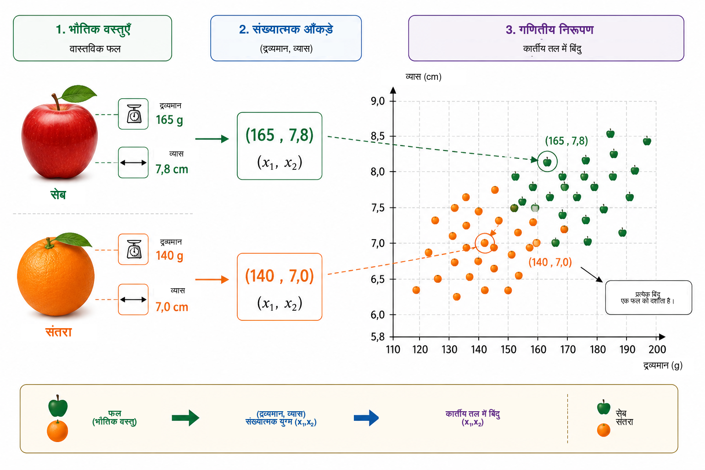
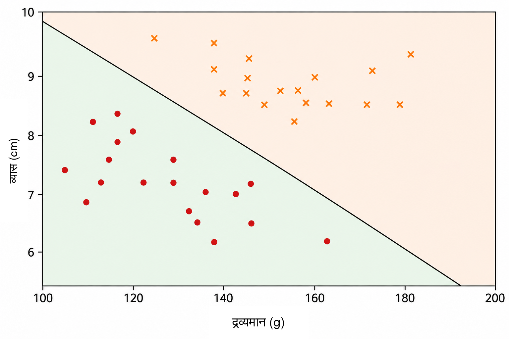
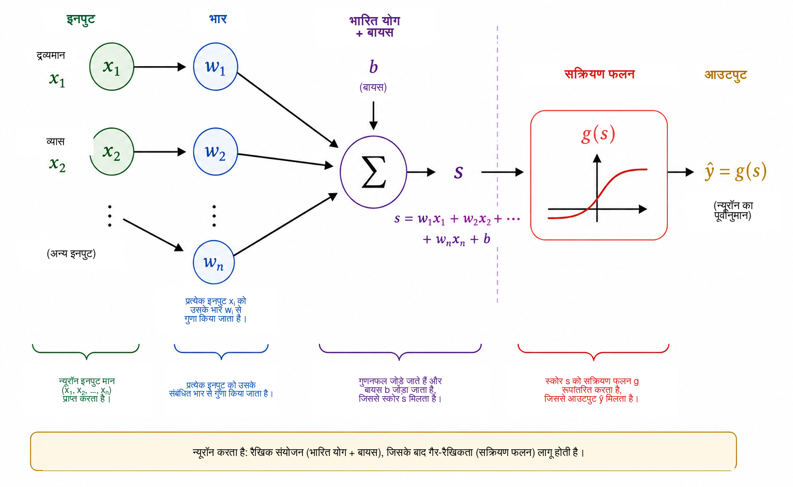
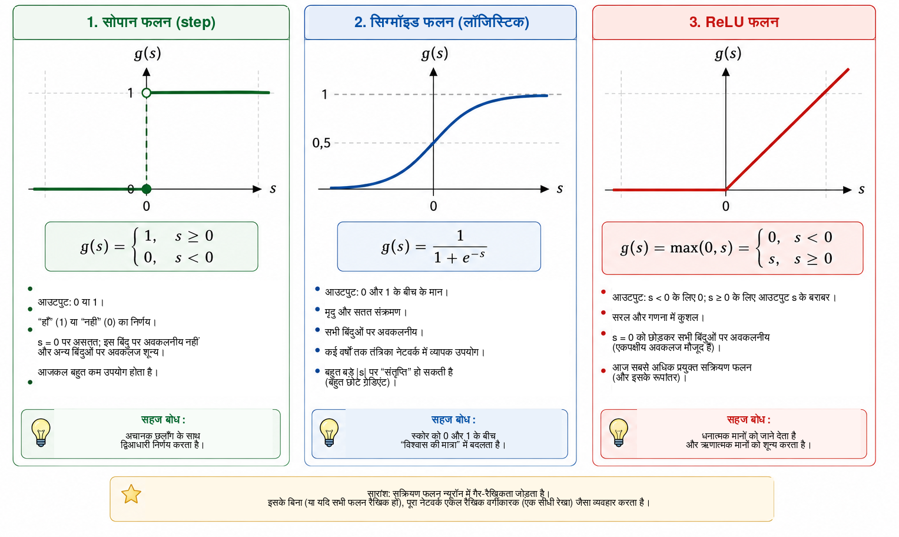
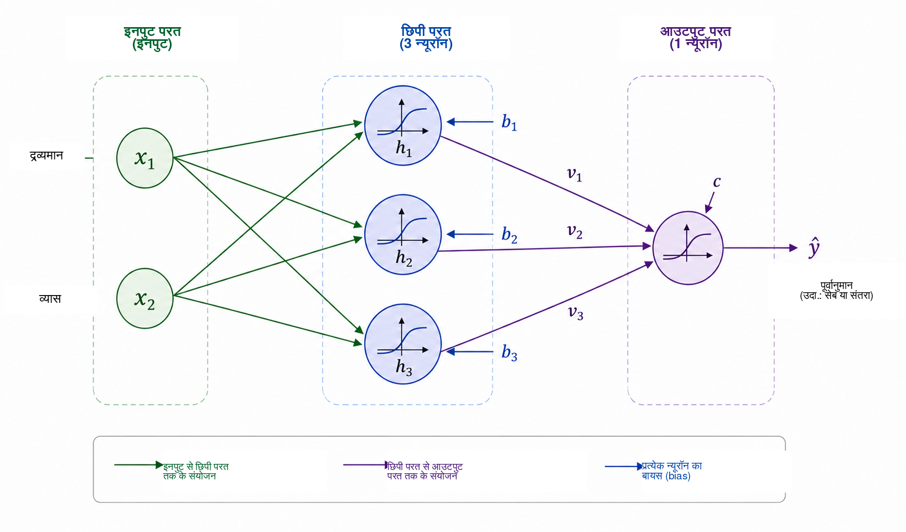
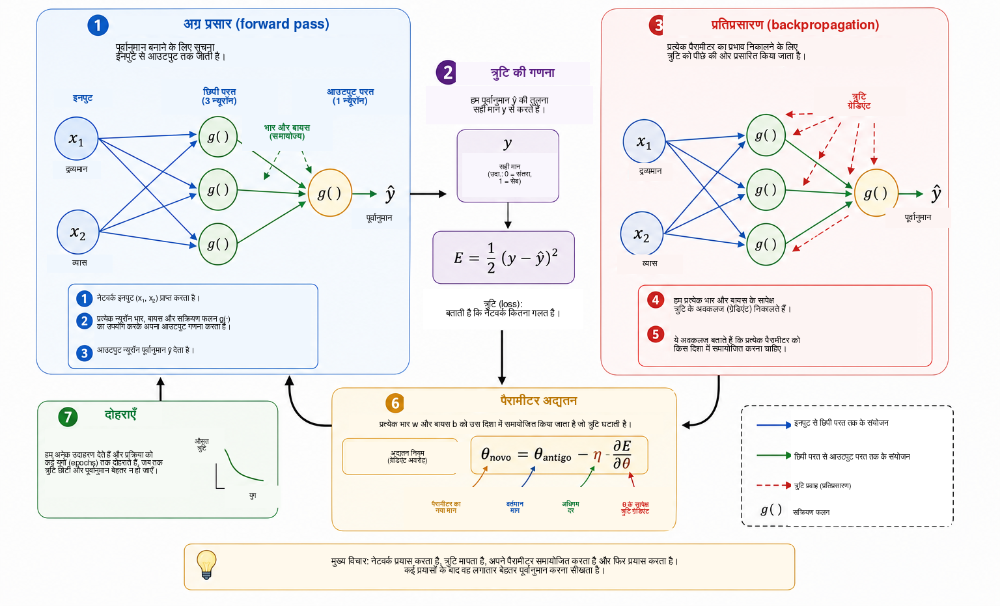
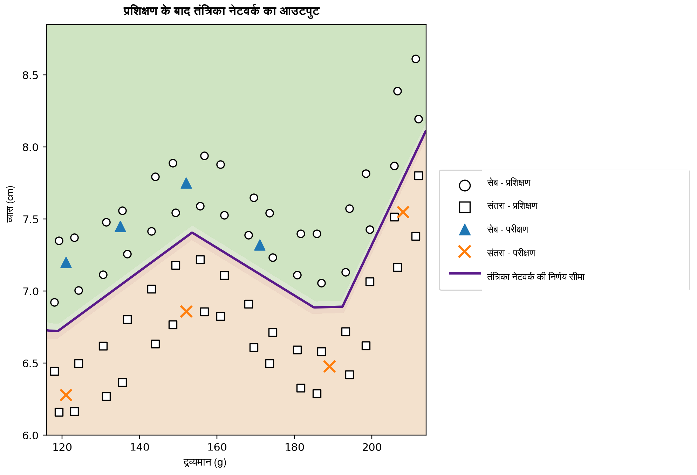

कंप्यूटर कब सीख सकता है?
हम रोज़मर्रा के जीवन में लगभग बिना ध्यान दिए वर्गीकरण संबंधी निर्णय लेते रहते हैं। किसी फल को देखकर हम शीघ्र पहचान लेते हैं कि वह सेब है या संतरा; मोबाइल पर संदेश आने पर हम सामान्य बातचीत और अवांछित विज्ञापन में अंतर कर लेते हैं; चिकित्सा विश्लेषण में कई मापों को मिलाकर किसी निर्णय में सहायता ली जा सकती है; और वित्तीय संस्थानों में ऋण देने से पहले अनेक प्रकार की सूचनाओं का मूल्यांकन किया जाता है। इन सभी उदाहरणों में उत्तर प्राप्त करने के लिए कई विशेषताओं को एक साथ देखा जाता है।
बहुत-से पारंपरिक कंप्यूटर प्रोग्रामों में इस उत्तर तक पहुँचने वाले नियम प्रोग्रामर द्वारा स्पष्ट रूप से लिखे जाते हैं। जब नियम ज्ञात हों और उन्हें साफ़ शब्दों में व्यक्त किया जा सके, तब यह तरीका अच्छी तरह काम करता है। लेकिन जब आँकड़ों में बहुत अधिक विविधता हो, या अच्छे निर्णय के लिए आवश्यक सभी शर्तों को पहले से लिखना कठिन हो, तब यह तरीका सीमित हो जाता है। इससे एक स्वाभाविक प्रश्न उठता है:
क्या हम ऐसा प्रोग्राम बना सकते हैं जो निर्णय का नियम तैयार रूप में पाने के बजाय उदाहरणों से स्वयं सीख सके?
यह मशीन लर्निंग की केंद्रीय धारणाओं में से एक है। मशीन लर्निंग कृत्रिम बुद्धिमत्ता का वह क्षेत्र है जिसमें डेटा से मॉडल समायोजित करने की विधियों का अध्ययन किया जाता है । पर्यवेक्षित अधिगम की समस्या में एल्गोरिथ्म को सही उत्तरों के साथ उदाहरण दिए जाते हैं, और हमारा उद्देश्य ऐसा मॉडल प्राप्त करना होता है जो प्रशिक्षण में न देखे गए उदाहरणों के लिए भी उपयोगी पूर्वानुमान दे सके। इस उद्देश्य के लिए विकसित अनेक मॉडलों में कृत्रिम तंत्रिका नेटवर्क ने चित्र पहचान, भाषा प्रसंस्करण, संकेत विश्लेषण और समय-श्रृंखला पूर्वानुमान जैसे अनुप्रयोगों में विशेष महत्व प्राप्त किया है ।
गणित, संगणना और विद्यालयी शिक्षा के बीच सेतु के रूप में तंत्रिका नेटवर्क के उपयोग पर Professor de Matemática Online में Batista और Martins पहले ही चर्चा कर चुके हैं। उन्होंने शिक्षक-शिक्षा, Python और अंकों की पहचान को जोड़ने वाली एक गतिविधि प्रस्तुत की। वर्तमान लेख एक पूरक मार्ग अपनाता है। हमारा मुख्य उद्देश्य एक छोटे तंत्रिका नेटवर्क की आंतरिक गणितीय संरचना को स्पष्ट करना है: विश्लेषणात्मक ज्यामिति से आरंभ करके हम क्रमशः ग्रेडिएंट की गणना और प्रतिप्रसारण के प्रत्यक्ष कार्यान्वयन तक पहुँचेंगे।
आधुनिक अनुप्रयोगों की जटिलता के बावजूद, तंत्रिका नेटवर्क का गणितीय मूल अपेक्षाकृत परिचित विचारों से समझाया जा सकता है। मूल रूप में तंत्रिका नेटवर्क फलनों का एक संयोजन है, जिसके पैरामीटर डेटा से समायोजित किए जाते हैं। हम एक सरल ज्यामितीय समस्या से आरंभ करेंगे, एक विभाजक सीधी रेखा को कृत्रिम न्यूरॉन के रूप में पुनर्व्याख्यायित करेंगे, कई न्यूरॉनों को जोड़ेंगे, सक्रियण फलनों की भूमिका समझेंगे और दिखाएँगे कि अवकलजों की सहायता से नेटवर्क के पैरामीटर स्वचालित रूप से कैसे समायोजित किए जा सकते हैं। अंत में हम Python में एक पूरा छोटा उदाहरण लागू करेंगे, जिसमें समीकरणों और कोड के बीच सीधा संबंध बना रहेगा।
समस्या का गणितीय निरूपण
तंत्रिका नेटवर्क कैसे काम करता है, यह समझने के लिए हम जानबूझकर एक सरल समस्या से शुरुआत करते हैं: सेब और संतरे में अंतर करना। किसी फल में रंग, द्रव्यमान, व्यास, बनावट और सुगंध जैसी अनेक विशेषताएँ हो सकती हैं, जिनका उपयोग इस कार्य में किया जा सकता है। किंतु एक प्रारंभिक गणितीय मॉडल को यह सारी जटिलता शामिल करने की आवश्यकता नहीं है। हम केवल दो ऐसी राशियाँ चुनेंगे जिन्हें आसानी से मापा जा सकता है: ग्राम में द्रव्यमान और सेंटीमीटर में व्यास।
इस प्रकार प्रत्येक फल को एक क्रमित युग्म से दर्शाया जाएगा \[(x_1,x_2),\] जहाँ \[x_1=\text{द्रव्यमान} \qquad\text{और}\qquad x_2=\text{व्यास}.\]
अतः युग्म \((155,\;7.2)\) ऐसे फल को दर्शाता है जिसका द्रव्यमान \(155\) g और व्यास \(7.2\) cm है। भौतिक वस्तु को दो संख्यात्मक मापों से बदलने पर हम प्रत्येक फल को कार्तीय तल के एक बिंदु से जोड़ देते हैं: पहला निर्देशांक उसका द्रव्यमान और दूसरा उसका व्यास बताता है। चित्र 1 सेब और संतरे के एक काल्पनिक समूह के लिए इस निरूपण को दर्शाता है।

यह रूपांतरण समस्या के दिखाई देने वाले स्वरूप को बदल देता है। सीधे यह पूछने के बजाय कि सेब या संतरे को कैसे पहचाना जाए, हम एक ज्यामितीय प्रश्न पूछ सकते हैं: तल में दोनों वर्गों के बिंदुओं को कैसे अलग किया जाए? दृष्टिकोण का यह परिवर्तन मशीन लर्निंग में मूलभूत है। किसी एल्गोरिथ्म द्वारा संसाधित किए जाने से पहले चित्रों, पाठ, ध्वनि और प्रयोगात्मक संकेतों को संख्यात्मक निरूपण में बदलना पड़ता है। हमारे उदाहरण में प्रत्येक वस्तु के केवल दो निर्देशांक हैं; वास्तविक अनुप्रयोगों में किसी निरूपण में सैकड़ों, हज़ारों या लाखों अवयव हो सकते हैं। सिद्धांत वही रहता है: प्रत्येक उदाहरण को संख्याओं के एक समूह से जोड़ा जाता है, और मॉडल ऐसा नियम खोजता है जो इस निरूपण को वांछित उत्तर से जोड़ सके।
हम सबसे सरल उपलब्ध ज्यामितीय नियम से शुरुआत करते हैं और पूछते हैं कि क्या एक ही सीधी रेखा सेब के बिंदुओं को संतरे के बिंदुओं से पर्याप्त रूप से अलग कर सकती है।
वर्गीकारक के रूप में एक सीधी रेखा
जब प्रत्येक फल को कार्तीय तल में एक बिंदु के रूप में निरूपित कर दिया जाता है, तब वर्गीकरण एक ज्यामितीय समस्या बन जाता है: क्या कोई सीधी रेखा सेबों को संतरों से अलग कर सकती है? यह प्रश्न मशीन लर्निंग की एक महत्वपूर्ण श्रेणी, रैखिक वर्गीकारकों, की मूल धारणा व्यक्त करता है।
चित्र 2 की तरह डेटा के बीच से गुजरती एक रेखा पर विचार करें। यह तल को दो अर्धतलों में विभाजित करती है। यदि अधिकांश सेब एक ओर और अधिकांश संतरे दूसरी ओर हों, तो किसी नए फल की रेखा के सापेक्ष स्थिति को वर्गीकरण नियम के रूप में उपयोग किया जा सकता है। फल का द्रव्यमान और व्यास मापने के बाद हम उसे एक बिंदु के रूप में रखते हैं और देखते हैं कि वह रेखा के किस ओर स्थित है।

कार्तीय तल \((x_1,x_2)\) में एक रेखा को इस प्रकार लिखा जा सकता है \[w_1x_1+w_2x_2+b=0, \qquad (w_1,w_2)\neq(0,0).\]
सदिश \((w_1,w_2)\) रेखा पर लंबवत होता है और इसलिए उसकी दिशा निर्धारित करता है, जबकि पैरामीटर \(b\) उसकी स्थिति निर्धारित करने में योगदान देता है। इस निरूपण में थोड़ी पुनरावृत्ति है: यदि \(w_1\), \(w_2\) और \(b\) को एक ही अशून्य नियतांक से गुणा किया जाए, तो वही रेखा प्राप्त होती है। इसलिए सीमा का वर्णन करने वाले पैरामीटर अद्वितीय नहीं हैं। उनका संख्यात्मक अर्थ चर की मापनी पर भी निर्भर करता है। चूँकि द्रव्यमान ग्राम में और व्यास सेंटीमीटर में मापा जाता है, इसलिए अलग-अलग इकाइयों को ध्यान में रखे बिना \(w_1\) और \(w_2\) के परिमाणों की सीधी तुलना नहीं करनी चाहिए।
रेखा का समीकरण स्वयं यह निर्धारित करने का सरल तरीका देता है कि कोई बिंदु सीमा के किस ओर है। हम स्कोर परिभाषित करते हैं \[s(x_1,x_2)=w_1x_1+w_2x_2+b.\]
यदि \(s(x_1,x_2)=0\) है, तो बिंदु रेखा पर है। यदि \(s(x_1,x_2)>0\) है, तो वह एक अर्धतल में है; यदि \(s(x_1,x_2)<0\) है, तो वह दूसरे अर्धतल में है। यदि हम तय करें कि धनात्मक स्कोर सेब और ऋणात्मक स्कोर संतरे को दर्शाते हैं, तो निर्णय नियम होगा \[\begin{cases} s(x_1,x_2)\geq 0 & \Longrightarrow \text{सेब},\\ s(x_1,x_2)<0 & \Longrightarrow \text{संतरा}. \end{cases}\]
उदाहरण के लिए, निम्न सीमा पर विचार करें \[w_1=\frac{1}{10}, \qquad w_2=2, \qquad b=-30.\] \(160\) g द्रव्यमान और \(7.8\) cm व्यास वाले फल के लिए \[\begin{aligned} s &=\frac{1}{10}\times160+2\times7.8-30\\ &=16+15.6-30\\ &=1.6. \end{aligned}\] चूँकि स्कोर धनात्मक है, बिंदु उस अर्धतल में आता है जिसे हमने सेब से जोड़ा है। अतः यह वर्गीकारक फल को सेब कहेगा।
\(w_1\), \(w_2\) और \(b\) का हर चयन अच्छा वर्गीकरण नहीं देता। कुछ रेखाएँ दोनों समूहों को खराब ढंग से अलग करती हैं, जबकि अन्य कम त्रुटियाँ करती हैं। सीखने की समस्या का अर्थ है पहले से वर्गीकृत उदाहरणों का उपयोग करके ऐसे पैरामीटर निर्धारित करना जो मॉडल की त्रुटि के किसी माप को कम करें। रेखा की स्थिति को सीधे प्रोग्राम करने के बजाय हम चाहते हैं कि एल्गोरिथ्म डेटा से उसके गुणांक स्वयं समायोजित करे।
एक ही रेखा तब पर्याप्त हो सकती है जब वर्ग लगभग रैखिक रूप से पृथक किए जा सकें। अधिक जटिल डेटा के लिए गैर-रैखिक सीमा आवश्यक हो सकती है। इस सीमा को पार करने से पहले हम अभी बनाए गए वर्गीकारक को गणना की एक मूल इकाई के रूप में पुनर्व्याख्यायित करेंगे: कृत्रिम न्यूरॉन।
कृत्रिम न्यूरॉन
पिछले अनुभाग में अभिव्यक्ति \[s=w_1x_1+w_2x_2+b\] का उपयोग यह निर्धारित करने के लिए किया गया कि किसी फल का बिंदु रेखा के किस ओर है। यही अभिव्यक्ति कृत्रिम न्यूरॉन द्वारा की जाने वाली गणना की पहली अवस्था भी मानी जा सकती है। एक न्यूरॉन संख्यात्मक इनपुट लेता है, उन्हें भार और बायस की सहायता से संयोजित करता है और फिर आउटपुट प्राप्त करने के लिए एक गणितीय फलन लागू करता है।
हमारे उदाहरण में इनपुट द्रव्यमान \(x_1\) और व्यास \(x_2\) हैं। प्रत्येक इनपुट को भार कहलाने वाले एक पैरामीटर से गुणा किया जाता है; गुणनफलों को नियत पद \(b\) के साथ जोड़ा जाता है, जिसे बायस कहते हैं। चित्र 3 इस गणना को योजनात्मक रूप से दिखाता है।

भार यह निर्धारित करते हैं कि इनपुट में परिवर्तन से स्कोर किस प्रकार बदलता है। यदि \(x_2\) और अन्य सभी राशियाँ स्थिर रखी जाएँ, तो \(x_1\) में परिवर्तन \(\Delta x_1\) स्कोर को \(w_1\Delta x_1\) से बदलता है। इसी प्रकार \(x_2\) में परिवर्तन \(\Delta x_2\) स्कोर को \(w_2\Delta x_2\) से बदलता है। चिन्ह भी महत्वपूर्ण है: धनात्मक भार पर इनपुट बढ़ने से स्कोर बढ़ता है, जबकि ऋणात्मक भार विपरीत प्रभाव देता है। अलग-अलग इकाइयों और मापनी वाले चरों के लिए इस व्याख्या का सावधानी से उपयोग करना चाहिए। इसी कारण व्यावहारिक कार्यान्वयन प्रशिक्षण से पहले इनपुट डेटा को प्रायः सामान्यीकृत या मानकीकृत करते हैं।
बायस \(b\) अफ़ाइन रूपांतरण का नियत पद है। ज्यामितीय रूप से यह निर्णय सीमा को स्थानांतरित करने देता है। यदि \(b=0\) हो, तो \[w_1x_1+w_2x_2=0\] रेखा को मूलबिंदु से गुजरने के लिए बाध्य करता है। बायस होने पर सीमा अन्य स्थानों पर जा सकती है। समान रूप से, जब \(x_1=x_2=0\) हो, तो स्कोर केवल \(s=b\) होता है।
स्कोर का ही अंतिम न्यूरॉन आउटपुट होना आवश्यक नहीं है। सामान्यतः उस पर एक सक्रियण फलन \(g\) लगाया जाता है: \[\widehat{y}=g(s)=g\left(w_1x_1+w_2x_2+b\right).\] इस प्रकार गणना की दो अवस्थाएँ हैं, \[\begin{aligned} s &= w_1x_1+w_2x_2+b,\\[4pt] \widehat{y} &= g(s). \end{aligned}\]
पिछले अनुभाग के पैरामीटर लेने पर \(s=1.6\) मिलता है। यदि हम सोपान फलन चुनें \[g(s)= \begin{cases} 1, & s\geq0,\\ 0, & s<0, \end{cases}\] तो \(\widehat{y}=g(1.6)=1\)। हमारी परंपरा के अनुसार फल को सेब वर्ग दिया जाएगा। इस सक्रियण में निर्णय \(s=0\) पार करते समय बदलता है, इसलिए वर्ग सीमा ठीक \[w_1x_1+w_2x_2+b=0\] है।
इस प्रकार एक न्यूरॉन समायोज्य पैरामीटरों वाला एक सरल गणितीय वस्तु है। उसका वास्तविक महत्व तब सामने आता है जब अनेक ऐसी इकाइयाँ जोड़ी जाती हैं। नेटवर्क बनाने से पहले हमें यह समझना होगा कि सक्रियण फलन क्यों आवश्यक है।
सक्रियण फलन की आवश्यकता क्यों है?
एक न्यूरॉन पहले अफ़ाइन रूपांतरण से स्कोर निकालता है और उसके बाद सक्रियण फलन लगाता है। यदि तंत्रिका नेटवर्क को जटिल संबंध निरूपित करने हैं तो यह दूसरी अवस्था आवश्यक है। इसे समझने के लिए ऐसा नेटवर्क सोचें जिसमें कोई सक्रियण फलन न हो। तब प्रत्येक इकाई का रूप होगा \[y=w_1x_1+w_2x_2+b.\]
एक आयामी उदाहरण में मान लें कि पहली इकाई \[h=ax+b\] देती है और दूसरी \[y=ch+d\] गणना करती है। प्रतिस्थापन करने पर \[y=c(ax+b)+d=acx+(cb+d),\] जो फिर भी \(x\) का एक अफ़ाइन फलन है। कई आयामों में भी यही बात सत्य है: अफ़ाइन रूपांतरणों का संयोजन स्वयं अफ़ाइन ही रहता है। इसलिए गैर-रैखिक क्रिया के बिना अनेक परतें जोड़ने से नेटवर्क मूल रूप से अधिक अभिव्यंजक नहीं बनता; पूरे संयोजन को एक ही अफ़ाइन रूपांतरण से बदला जा सकता है।
सक्रियण फलन इस सीमा को तोड़ता है। स्कोर \(s\) प्राप्त करने के बाद न्यूरॉन सामान्यतः गैर-रैखिक मानचित्र \[h=g(s)\] लगाता है। जब कई ऐसी इकाइयाँ जोड़ी जाती हैं, तो परिणामी संयोजन को एक अफ़ाइन रूपांतरण में समेटा नहीं जा सकता। इससे नेटवर्क अधिक जटिल निर्णय सीमाएँ बना सकता है।
सबसे सरल सक्रियण सोपान फलन है, \[g(s)= \begin{cases} 1, & s\geq0,\\ 0, & s<0. \end{cases}\] यह द्विआधारी निर्णय देता है और वर्गीकरण को समझने के लिए बहुत उपयोगी है। लेकिन इसका अवकलज \(s\neq0\) के लिए शून्य है और \(s=0\) पर परिभाषित नहीं है। चूँकि ग्रेडिएंट-आधारित प्रशिक्षण पैरामीटरों को किस दिशा में बदलना है यह तय करने के लिए अवकलजों का उपयोग करता है, इसलिए इस प्रशिक्षण विधि के लिए सोपान फलन उपयुक्त नहीं है।
एक विकल्प सिग्मॉइड फलन है, \[\sigma(s)=\frac{1}{1+e^{-s}}.\] यह प्रत्येक वास्तविक संख्या को \(0\) और \(1\) के बीच के मान में बदलता है। बहुत ऋणात्मक \(s\) के लिए आउटपुट \(0\) के निकट और बहुत धनात्मक \(s\) के लिए \(1\) के निकट जाता है; बीच में संक्रमण मृदु है। सिग्मॉइड हर जगह अवकलनीय है और \[\sigma'(s)=\sigma(s)\bigl(1-\sigma(s)\bigr).\] चूँकि इसके आउटपुट \(0\) और \(1\) के बीच होते हैं, इसे द्विआधारी वर्गीकरण की आउटपुट परत में अक्सर उपयोग किया जाता है। उचित हानि फलन वाली संभाव्य व्याख्या में आउटपुट को वर्ग \(1\) की प्रायिकता के अनुमान के रूप में समझा जा सकता है। लेकिन छिपी परतों में सिग्मॉइड कठिनाई पैदा कर सकता है: बड़े परिमाण वाले इनपुट पर इसका अवकलज बहुत छोटा हो जाता है, जो गहरे नेटवर्क में लुप्त होते ग्रेडिएंट की समस्या में योगदान देता है।
छिपी परतों में व्यापक रूप से प्रयुक्त सक्रियण ReLU (Rectified Linear Unit) है, \[\operatorname{ReLU}(s)=\max(0,s) = \begin{cases} 0, & s<0,\\ s, & s\geq0. \end{cases}\] यद्यपि यह दो रैखिक टुकड़ों से बना है, ReLU वैश्विक रूप से रैखिक नहीं है। इसका अवकलज \(s<0\) पर \(0\) और \(s>0\) पर \(1\) है। \(s=0\) पर सामान्य अवकलज मौजूद नहीं होता और सॉफ्टवेयर कार्यान्वयन ग्रेडिएंट के लिए एक परंपरा अपनाते हैं। धनात्मक इनपुट के लिए \(s\) बढ़ने पर अवकलज छोटा नहीं होता, जिससे सिग्मॉइड की एक संतृप्ति-समस्या से बचा जा सकता है।
चित्र 4 इन तीन सक्रियणों की तुलना दिखाता है: सोपान फलन की अचानक छलाँग, सिग्मॉइड का मृदु संक्रमण और ReLU की ढाल में परिवर्तन।

इनके मुख्य गुण नीचे संक्षेप में दिए गए हैं।
| फलन | आउटपुट | अवकलज | सामान्य उपयोग |
|---|---|---|---|
| सोपान | \(\{0,1\}\) | \(s\neq0\) पर शून्य; \(s=0\) पर अपरिभाषित | ऐतिहासिक मॉडल और शिक्षण उदाहरण |
| सिग्मॉइड | \((0,1)\) | प्रत्येक \(s\) के लिए मौजूद | द्विआधारी वर्गीकरण की आउटपुट परत |
| ReLU | \([0,\infty)\) | \(s<0\) पर \(0\) और \(s>0\) पर \(1\) | छिपी परतें |
इन फलनों के विवरण अलग हैं, पर उनकी साझा वैचारिक भूमिका गैर-रैखिकता जोड़ना है। यही गैर-रैखिकता अगले अनुभाग के छोटे नेटवर्क को ऐसे संबंध निरूपित करने देती है जिन्हें एक सीधी रेखा नहीं पकड़ सकती।
आगे पढ़ने के इच्छुक पाठकों के लिए Haykin तंत्रिका नेटवर्क का एक शास्त्रीय विवेचन देते हैं, जबकि Goodfellow, Bengio और Courville सक्रियण फलनों और गहरे नेटवर्क के प्रशिक्षण पर विस्तृत चर्चा करते हैं। Nielsen का मुक्त रूप से उपलब्ध पाठ न्यूरॉन, सक्रियण और सीखने की सहज समझ विकसित करने के लिए विशेष रूप से उपयोगी है।
एक छोटा तंत्रिका नेटवर्क बनाना
अब हम दो इनपुट, तीन न्यूरॉन वाली एक छिपी परत और एक आउटपुट न्यूरॉन वाले नेटवर्क पर विचार करते हैं। इनपुट अभी भी \[x_1=\text{द्रव्यमान}, \qquad x_2=\text{व्यास},\] हैं और दोनों को प्रत्येक छिपे न्यूरॉन में भेजा जाता है, जैसा कि चित्र 5 में दिखाया गया है।

मान लें छिपी परत के आउटपुट \(h_1\), \(h_2\) और \(h_3\) हैं। प्रत्येक न्यूरॉन को वही दो इनपुट मिलते हैं, किंतु उसके अपने भार और बायस होते हैं: \[\begin{aligned} h_1&=g\left(w_{11}x_1+w_{12}x_2+b_1\right),\\[4pt] h_2&=g\left(w_{21}x_1+w_{22}x_2+b_2\right),\\[4pt] h_3&=g\left(w_{31}x_1+w_{32}x_2+b_3\right). \end{aligned}\]
यद्यपि तीनों न्यूरॉन एक ही द्रव्यमान और व्यास प्राप्त करते हैं, उनके पैरामीटर अलग होने से उनके उत्तर अलग हो सकते हैं। प्रशिक्षण के दौरान इन पैरामीटरों को इस प्रकार समायोजित किया जाता है कि मध्यवर्ती सक्रियताएँ वर्गीकरण के लिए उपयोगी बनें।
फिर \(h_1\), \(h_2\) और \(h_3\) को आउटपुट न्यूरॉन में भेजा जाता है, जो \[s_{\mathrm{out}}=v_1h_1+v_2h_2+v_3h_3+c\] गणना करता है और \[\widehat{y}=g_{\mathrm{out}}\left(s_{\mathrm{out}}\right)\] देता है। हमारी द्विआधारी समस्या के लिए हम सिग्मॉइड आउटपुट लेते हैं: \[\widehat{y}=\sigma\left(v_1h_1+v_2h_2+v_3h_3+c\right), \qquad 0<\widehat{y}<1.\]
सेब के लिए \(y=1\) और संतरे के लिए \(y=0\) लेते हुए, \(0.5\) की सीमा से वर्ग निर्णय होगा \[\widehat{y}\geq0.5 \Longrightarrow \text{सेब}, \qquad \widehat{y}<0.5 \Longrightarrow \text{संतरा}.\] इसलिए \(1\) के निकट मान सेब से और \(0\) के निकट मान संतरे से दृढ़ता से जुड़े हैं। जैसा पहले कहा गया, \(\widehat{y}\) को संख्यात्मक रूप से प्रायिकता मानने के लिए मॉडल और प्रशिक्षण के बारे में अतिरिक्त मान्यताएँ आवश्यक हैं। यहाँ प्रयुक्त वर्गीकरण नियम के लिए इसे केवल नेटवर्क का सतत आउटपुट मानना पर्याप्त है।
इस संरचना की केंद्रीय विशेषता मध्यवर्ती निरूपण है \[(x_1,x_2) \longrightarrow (h_1,h_2,h_3) \longrightarrow \widehat{y}.\] नेटवर्क दो विशेषताएँ प्राप्त करता है और अंतिम उत्तर देने से पहले तीन नई राशियाँ बनाता है। ये सक्रियताएँ हाथ से नहीं चुनी जातीं; वे भार और बायस पर निर्भर हैं और इसलिए प्रशिक्षण के साथ बदलती हैं।
छोटा होने पर भी इस नेटवर्क में तेरह समायोज्य पैरामीटर हैं। तीन छिपे न्यूरॉनों में \[3(2+1)=9\] पैरामीटर हैं और आउटपुट न्यूरॉन \[3+1=4\] और जोड़ता है। अतः \[9+4=13.\]
मैट्रिक्स संकेत में यही गिनती और स्पष्ट हो जाती है। परिभाषित करें \[\mathbf{x}= \begin{bmatrix} x_1\\x_2 \end{bmatrix}, \qquad W^{(1)}= \begin{bmatrix} w_{11}&w_{12}\\ w_{21}&w_{22}\\ w_{31}&w_{32} \end{bmatrix}, \qquad \mathbf{b}^{(1)}= \begin{bmatrix} b_1\\b_2\\b_3 \end{bmatrix}.\] तब छिपी परत को संक्षेप में लिखा जा सकता है \[\mathbf{h}=g\left(W^{(1)}\mathbf{x}+\mathbf{b}^{(1)}\right),\] जहाँ \(g\) प्रत्येक अवयव पर अलग-अलग लागू होता है। आउटपुट के लिए \[\widehat{y} = \sigma\left(W^{(2)}\mathbf{h}+b^{(2)}\right),\] जहाँ \[W^{(2)}= \begin{bmatrix} v_1&v_2&v_3 \end{bmatrix}.\]
यह संकेत उस संरचना का पूर्वाभास देता है जो Python प्रोग्राम में दिखाई देगी। जब किसी फल को इनपुट पर दिया जाता है और हम क्रमिक सक्रियताएँ निकालते हुए \(\widehat{y}\) तक पहुँचते हैं, तो इसे अग्र प्रसार या forward pass कहते हैं। अब मुख्य प्रश्न यह है: इन तेरह पैरामीटरों को स्वचालित रूप से कैसे निर्धारित किया जाए ताकि पूर्वानुमान डेटा के अनुरूप हों?
तंत्रिका नेटवर्क कैसे सीखता है?
भार और बायस पहले से ज्ञात नहीं होते। उन्हें ऐसे उदाहरणों से समायोजित करना पड़ता है जिनके सही उत्तर उपलब्ध हों। इस प्रक्रिया को प्रशिक्षण कहते हैं और इसे इस चक्र से संक्षेपित किया जा सकता है \[\boxed{\text{पूर्वानुमान}} \longrightarrow \boxed{\text{त्रुटि मापें}} \longrightarrow \boxed{\text{पैरामीटर समायोजित करें}} \longrightarrow \boxed{\text{दोहराएँ}}.\]
मान लें किसी फल का द्रव्यमान \(140\) g और व्यास \(7.0\) cm है तथा उसका सही वर्ग संतरा है, इसलिए \(y=0\)। मान लें प्रशिक्षण के किसी चरण पर नेटवर्क \(\widehat{y}=0.80\) देता है। पूर्वानुमान और लक्ष्य के अंतर का एक सरल माप वर्ग त्रुटि है \[E=\frac{1}{2}\left(y-\widehat{y}\right)^2.\] इस उदाहरण में \[E=\frac{1}{2}(0-0.80)^2=0.32.\]
यह एक उदाहरण के लिए हानि फलन है। चूँकि यह वर्ग है, \(E\geq0\) और लक्ष्य से दूर पूर्वानुमानों को बड़ी दंड राशि मिलती है। गुणक \(1/2\) न्यूनतम का स्थान नहीं बदलता, पर अवकलज सरल कर देता है। द्विआधारी वर्गीकरण में अन्य हानि फलन, विशेषकर क्रॉस-एंट्रॉपी, भी बहुत प्रयुक्त होते हैं। यहाँ हम वर्ग त्रुटि का उपयोग इसलिए करते हैं क्योंकि उसका बीजगणित स्पष्ट है और वह अनुकूलन तथा प्रतिप्रसारण समझाने के लिए पर्याप्त है ।
यदि प्रशिक्षण समुच्चय में \(N\) उदाहरण हों, तो एक वैश्विक माप औसत हानि है \[J=\frac{1}{N}\sum_{i=1}^{N}E_i.\] हर पूर्वानुमान नेटवर्क के भार और बायस पर निर्भर करता है, इसलिए \(J\) भी सभी पैरामीटरों पर निर्भर है। प्रशिक्षण का अर्थ ऐसे पैरामीटर खोजना है जिनसे \(J\) छोटा हो।
समायोजन की क्रिया समझने के लिए पहले कल्पना करें कि एक भार \(w\) को छोड़कर बाकी सभी पैरामीटर स्थिर हैं। तब हानि को \(J=J(w)\) के रूप में देखा जा सकता है। चित्र 6 प्रशिक्षण के उन मूल चरणों को संक्षेपित करता है जिनकी अब हम चर्चा करेंगे।

जिन पाठकों की कलन की पृष्ठभूमि सीमित है, उनके लिए यहाँ अवकलज को स्थानीय संवेदनशीलता के माप के रूप में समझा जा सकता है: यह बताता है कि किसी पैरामीटर में छोटा परिवर्तन हानि को किस प्रकार बदलने की प्रवृत्ति रखता है। उसका चिन्ह बताता है कि किस दिशा में फलन स्थानीय रूप से बढ़ता या घटता है, जबकि परिमाण उस स्थानीय परिवर्तन की तीव्रता बताता है।
अवकलज \[\frac{\partial J}{\partial w}\] स्थानीय ढाल देता है। यदि यह धनात्मक है, तो \(w\) में छोटा बढ़ाव \(J\) बढ़ाने की प्रवृत्ति रखता है, इसलिए भार को विपरीत दिशा में ले जाना चाहिए। यदि यह ऋणात्मक है, तो \(w\) बढ़ाने से \(J\) स्थानीय रूप से घटता है। दोनों स्थितियाँ इस नियम से व्यक्त होती हैं \[w_{\mathrm{new}} = w_{\mathrm{old}} - \eta\frac{\partial J}{\partial w},\] जो ग्रेडिएंट अवरोह का मूल विचार है। धनात्मक संख्या \(\eta\) अधिगम दर है; यह कदम का आकार नियंत्रित करती है। बहुत छोटा मान प्रशिक्षण को धीमा कर सकता है, जबकि बहुत बड़ा मान दोलन या अस्थिरता पैदा कर सकता है।
कई पैरामीटर वाले नेटवर्क में \(\theta\) किसी भी भार या बायस को दर्शाए। तब अद्यतन होगा \[\theta_{\mathrm{new}} = \theta_{\mathrm{old}} - \eta\frac{\partial J}{\partial\theta}.\] सभी आंशिक अवकलजों का संग्रह हानि का ग्रेडिएंट कहलाता है। ज्यामितीय रूप से ग्रेडिएंट स्थानीय रूप से सबसे तेज़ वृद्धि की दिशा में इंगित करता है, इसलिए ऋणात्मक ग्रेडिएंट कमी की स्थानीय दिशा देता है।
अब भी यह निकालना बाकी है कि जब नेटवर्क कई फलनों का संयोजन हो तो ये अवकलज कैसे गणना किए जाएँ। अग्र प्रसार में सूचना इस प्रकार चलती है \[\text{इनपुट} \longrightarrow \text{छिपी परत} \longrightarrow \text{आउटपुट}.\] प्रारंभिक परत के किसी पैरामीटर का हानि पर प्रभाव जानने के लिए हम निर्भरताओं की श्रृंखला को गणितीय रूप से उल्टी दिशा में अनुसरण करते हैं। इस प्रक्रिया को प्रतिप्रसारण (backpropagation) कहते हैं। मूलतः यह श्रृंखला नियम का व्यवस्थित और कुशल अनुप्रयोग है। Rumelhart, Hinton और Williams ने छिपी परतों वाले नेटवर्क में इस प्रक्रिया के लोकप्रियकरण के लिए एक शास्त्रीय संदर्भ दिया, जबकि Nielsen इसका विस्तृत और विशेष रूप से शिक्षणात्मक व्युत्पादन प्रस्तुत करते हैं।
यदि किसी सरल निर्भरता श्रृंखला में \(E\) निर्भर है \(\widehat{y}\) पर, \(\widehat{y}\) निर्भर है सक्रियता \(h\) पर, और \(h\) निर्भर है भार \(w\) पर, तो श्रृंखला नियम देता है \[\frac{\partial E}{\partial w} = \frac{\partial E}{\partial\widehat{y}} \, \frac{\partial\widehat{y}}{\partial h} \, \frac{\partial h}{\partial w}.\] प्रत्येक गुणक अंतिम हानि पर \(w\) के प्रभाव की एक अवस्था को दर्शाता है। बड़े नेटवर्क में ऐसी अनेक श्रृंखलाएँ होती हैं और प्रतिप्रसारण गणना को इस प्रकार व्यवस्थित करता है कि मध्यवर्ती अवकलजों का पुनः उपयोग किया जा सके, न कि प्रत्येक पैरामीटर के लिए उन्हें अलग से फिर गणना करना पड़े।
व्यवहार में प्रशिक्षण अनेक उदाहरणों पर किया जाता है। पूरे प्रशिक्षण समुच्चय पर एक पूर्ण चक्र को युग (epoch) कहते हैं। पैरामीटर प्रत्येक उदाहरण के बाद अद्यतन किए जा सकते हैं, जैसा इस लेख के आगे आने वाले शिक्षणात्मक प्रोग्राम में है, या छोटे उदाहरण-समूहों, अर्थात mini-batches, के बाद; बड़े नेटवर्कों में दूसरा तरीका सामान्य है। दोनों ही स्थितियों में पूर्वानुमान, हानि, ग्रेडिएंट और अद्यतन का चक्र अनेक युगों तक दोहराया जाता है।
इस विकास को ठोस रूप से देखने के लिए किसी एक निश्चित उदाहरण के पूर्वानुमान को प्रशिक्षण के अलग-अलग चरणों पर देखा जा सकता है। फिर उसी फल पर विचार करें जिसका द्रव्यमान \(140\) g और व्यास \(7.0\) cm है और जिसका सही वर्ग संतरा है। तालिका 1 एक काल्पनिक प्रगति दिखाती है। ये मान किसी विशिष्ट निष्पादन के परिणाम नहीं हैं; वे केवल प्रक्रिया समझाने के लिए हैं।
| युग | पूर्वानुमान \(\widehat{y}\) | हानि \(E\) | वर्गीकरण |
|---|---|---|---|
| 1 | 0.86 | 0.37 | सेब |
| 5 | 0.71 | 0.25 | सेब |
| 10 | 0.55 | 0.15 | सेब |
| 20 | 0.31 | 0.05 | संतरा |
| 40 | 0.09 | 0.004 | संतरा |
आरंभ में आउटपुट \(1\) के निकट है और फल को गलत रूप से सेब कहा जाता है। जैसे-जैसे पैरामीटर समायोजित होते हैं, पूर्वानुमान घटता है और अंततः \(0.5\) की सीमा पार कर सही वर्ग देता है। इस प्रक्रिया में भार और बायस के संख्यात्मक मान बदलते हैं; नेटवर्क की संरचना स्थिर रहती है।
प्रशिक्षण डेटा पर हानि घटाना अंतिम उद्देश्य नहीं है। उपयोगी नेटवर्क को उन उदाहरणों पर भी अच्छे पूर्वानुमान देने चाहिए जिनसे पैरामीटर नहीं फिट किए गए थे। इस क्षमता को सामान्यीकरण कहते हैं। जब कोई मॉडल प्रशिक्षण समुच्चय की विशिष्टताओं के साथ अत्यधिक अनुकूलित हो जाता है और नए डेटा पर खराब प्रदर्शन करता है, तो इसे ओवरफिटिंग कहते हैं। अधिक सावधान मूल्यांकन में डेटा को प्रायः प्रशिक्षण, सत्यापन और परीक्षण समुच्चयों में बाँटा जाता है: पहला पैरामीटर फिट करता है, दूसरा मॉडल विकसित करते समय किए गए चुनावों में सहायता करता है और तीसरा अंतिम मूल्यांकन के लिए सुरक्षित रखा जाता है। सामान्यीकरण और मॉडल मूल्यांकन की विस्तृत चर्चा Faceli et al. तथा Goodfellow, Bengio और Courville में मिलती है।
अब हम तंत्रिका नेटवर्क में सीखने के गणितीय अर्थ तक पहुँच चुके हैं। इस संदर्भ में सीखना एक संयुक्त फलन के पैरामीटरों को इस प्रकार समायोजित करना है कि डेटा पर त्रुटि का कोई माप घटे और आदर्श रूप से मॉडल नए उदाहरणों पर भी सामान्यीकृत करे। नेटवर्क पूर्वानुमान करता है, हानि निकालता है, अवकलजों से यह निर्धारित करता है कि उसके पैरामीटर उस हानि को कैसे प्रभावित करते हैं और फिर छोटे-छोटे सुधार करता है।
गणित से Python तक
अब हम समीकरणों से एक चलने योग्य प्रोग्राम की ओर बढ़ते हैं। उद्देश्य किसी विशेष तंत्रिका-नेटवर्क लाइब्रेरी का उपयोग करना नहीं, बल्कि NumPy के साथ लेख में विकसित गणितीय क्रियाओं को सीधे लागू करना है । इससे पंक्ति-दर-पंक्ति देखा जा सकता है कि रैखिक संयोजन, सक्रियण फलन, हानि की गणना, प्रतिप्रसारण और ग्रेडिएंट अवरोह कोड में कैसे दिखाई देते हैं।
अंतिम उदाहरण को अधिक विश्वसनीय बनाने के लिए हम द्रव्यमान–व्यास के बड़े क्षेत्र में फैला एक कृत्रिम डेटा समुच्चय उपयोग करते हैं। हम अभी भी केवल दो भौतिक विशेषताओं — ग्राम में द्रव्यमान और सेंटीमीटर में व्यास — के साथ काम करते हैं, लेकिन अब \(64\) प्रशिक्षण उदाहरणों को तल के बड़े क्षेत्र में वितरित करते हैं और आठ अतिरिक्त उदाहरणों को एक उदाहरणात्मक परीक्षण के लिए अलग रखते हैं। डेटा कृत्रिम हैं, पर सेब और संतरे के लिए यथार्थवादी सीमाओं में रहते हैं। इन्हें इस प्रकार बनाया गया है कि निर्णय सीमा गैर-रैखिक हो और सभी बिंदु कुछ अत्यधिक कृत्रिम समूहों में केंद्रित न हों।
ज्यामितीय विचार सरल है। हम द्रव्यमान–व्यास तल में एक संदर्भ वक्र परिभाषित करते हैं, उसके ऊपर की दो पट्टियों में सेब और नीचे की दो पट्टियों में संतरे रखते हैं। द्रव्यमान और व्यास दोनों में छोटे नियत व्यवधान जोड़े जाते हैं ताकि अवलोकन बड़े क्षेत्र में फैलें। परिणामी उदाहरण पहले के चित्रों की तुलना में समृद्ध है: इसमें अधिक बिंदु हैं, डेटा पूरे क्षेत्र में फैले हैं और उचित निर्णय सीमा स्पष्ट रूप से सीधी रेखा की तुलना में अधिक वक्र है।
इस अंतिम संगणकीय प्रयोग में हम छिपी परत को बारह ReLU न्यूरॉनों तक बढ़ाते हैं। इससे पिछले अनुभागों में पढ़ी गई वैचारिक संरचना नहीं बदलती; केवल अधिक जटिल सीमा निरूपित करने की नेटवर्क की क्षमता बढ़ती है। तीन-न्यूरॉन वाले शिक्षण नेटवर्क के \(13\) पैरामीटरों के स्थान पर अब \(49\) समायोज्य पैरामीटर हैं: पहली परत में \(24\) भार और \(12\) बायस, फिर आउटपुट परत में \(12\) भार और एक बायस। समीकरणों का रूप ठीक वही रहता है; केवल सदिश और मैट्रिक्स बड़े हो जाते हैं।
पूरा प्रोग्राम नीचे दिया गया है।
import numpy as np
import matplotlib.pyplot as plt
from matplotlib.lines import Line2D
def relu(s):
return np.maximum(0, s)
def relu_derivative(s):
return (s > 0).astype(float)
def sigmoid(s):
return 1 / (1 + np.exp(-s))
def base_boundary(m):
return 6.68 + 0.74*np.exp(-((m-155)/20)**2) \
+ 1.50/(1 + np.exp(-(m-202)/5))
def build_data():
masses_1 = np.linspace(118, 212, 16)
masses_2 = masses_1 + np.array([
1.2,-1.1,0.8,-1.3,1.0,-0.8,1.1,-1.0,
1.3,-0.9,0.9,-1.2,1.0,-1.0,0.8,-0.7
])
k = np.arange(16)
a1 = np.column_stack([
masses_1,
base_boundary(masses_1) + 0.22 + 0.05*np.sin(0.8*k)
])
a2 = np.column_stack([
masses_2,
base_boundary(masses_2) + 0.58 + 0.06*np.cos(0.45*k)
])
o1 = np.column_stack([
masses_1,
base_boundary(masses_1) - (0.22 + 0.04*np.cos(0.7*k))
])
o2 = np.column_stack([
masses_2,
base_boundary(masses_2) - (0.55 + 0.05*np.sin(0.5*k))
])
X_train = np.vstack([a1, a2, o1, o2])
y_train = np.array([1.0]*32 + [0.0]*32)
X_test = np.array([
[121.0, 7.20], [135.0, 7.45],
[152.0, 7.75], [171.0, 7.32],
[121.0, 6.28], [152.0, 6.86],
[189.0, 6.48], [208.0, 7.55]
])
y_test = np.array([1,1,1,1,0,0,0,0], dtype=float)
return X_train, y_train, X_test, y_test
def predict(X, mean, std, W1, b1, W2, b2):
Xn = (X - mean) / std
outputs = []
for x in Xn:
h = relu(W1 @ x + b1)
y_hat = sigmoid(W2 @ h + b2)
outputs.append(y_hat)
return np.array(outputs)
X_train, y_train, X_test, y_test = build_data()
mean = X_train.mean(axis=0)
std = X_train.std(axis=0)
Xn = (X_train - mean) / std
rng = np.random.default_rng(42)
W1 = 0.1 * rng.standard_normal((12, 2))
b1 = np.zeros(12)
W2 = 0.1 * rng.standard_normal(12)
b2 = 0.0
eta = 0.05
n_epochs = 6000
history = []
for epoch in range(n_epochs):
for i in rng.permutation(len(Xn)):
x = Xn[i]
target = y_train[i]
z1 = W1 @ x + b1
h = relu(z1)
z2 = W2 @ h + b2
y_hat = sigmoid(z2)
delta2 = (y_hat - target) * y_hat * (1 - y_hat)
dW2 = delta2 * h
db2 = delta2
delta1 = (delta2 * W2) * relu_derivative(z1)
dW1 = np.outer(delta1, x)
db1 = delta1
W1 -= eta * dW1
b1 -= eta * db1
W2 -= eta * dW2
b2 -= eta * db2
errors = []
for x, target in zip(Xn, y_train):
h = relu(W1 @ x + b1)
y_hat = sigmoid(W2 @ h + b2)
errors.append(0.5 * (target - y_hat)**2)
history.append(np.mean(errors))
def make_figure():
masses = np.linspace(116, 214, 500)
diameters = np.linspace(6.0, 8.85, 500)
M, D = np.meshgrid(masses, diameters)
grid = np.column_stack([M.ravel(), D.ravel()])
P = predict(grid, mean, std, W1, b1, W2, b2).reshape(M.shape)
fig, ax = plt.subplots(figsize=(9.2, 6.3))
ax.contourf(
M, D, P,
levels=[0.0, 0.25, 0.50, 0.75, 1.0],
colors=["#f3e0cb", "#ecd5c4", "#dbe7cf", "#cde3bf"],
alpha=0.95
)
ax.contour(M, D, P, levels=[0.5],
colors=["#5a1a8a"], linewidths=2.2)
mask = y_train == 1.0
ax.scatter(X_train[mask,0], X_train[mask,1], marker="o",
s=48, facecolors="white", edgecolors="black",
linewidths=1.1, label="Apple - training")
mask = y_train == 0.0
ax.scatter(X_train[mask,0], X_train[mask,1], marker="s",
s=48, facecolors="white", edgecolors="black",
linewidths=1.1, label="Orange - training")
mask = y_test == 1.0
ax.scatter(X_test[mask,0], X_test[mask,1], marker="^",
s=92, color="#1f77b4", label="Apple - test")
mask = y_test == 0.0
ax.scatter(X_test[mask,0], X_test[mask,1], marker="x",
s=110, color="#ff7f0e", linewidths=2.0,
label="Orange - test")
ax.set_xlabel("Mass (g)")
ax.set_ylabel("Diameter (cm)")
ax.set_title("Neural-network output after training")
handles = [
Line2D([0],[0], marker='o', markersize=9,
markerfacecolor='white', markeredgecolor='black',
linestyle='None', label='Apple - training'),
Line2D([0],[0], marker='s', markersize=9,
markerfacecolor='white', markeredgecolor='black',
linestyle='None', label='Orange - training'),
Line2D([0],[0], marker='^', markersize=9, color='#1f77b4',
linestyle='None', label='Apple - test'),
Line2D([0],[0], marker='x', markersize=10, color='#ff7f0e',
linestyle='None', label='Orange - test'),
Line2D([0],[0], color='#5a1a8a', lw=2.2,
label='Neural-network decision boundary')
]
ax.legend(handles=handles, loc='center left',
bbox_to_anchor=(1.02, 0.5), frameon=True)
fig.tight_layout()
plt.show()यद्यपि कोड लेख के आरंभिक समीकरणों से लंबा है, उसकी संरचना स्पष्ट रहती है। build_data() फलन \(64\) प्रशिक्षण उदाहरण और आठ उदाहरणात्मक परीक्षण उदाहरण स्वतः बनाता है। इसके बाद हम दोनों चरों का मानकीकरण करते हैं \[x_j^{\ast}=\frac{x_j-\mu_j}{\sigma_j},\] जहाँ \(\mu_j\) और \(\sigma_j\) केवल प्रशिक्षण समुच्चय से निकाले जाते हैं। इससे परीक्षण समुच्चय पैरामीटर फिटिंग को प्रभावित नहीं करता और द्रव्यमान तथा व्यास तुलनीय संख्यात्मक मापनी पर आ जाते हैं।
अग्र प्रसार का सार नहीं बदलता। अंतर केवल इतना है कि पहली परत अब बारह छिपी सक्रियताओं का सदिश देती है। मैट्रिक्स रूप में, \[\mathbf{z}^{(1)}=W^{(1)}\mathbf{x}+\mathbf{b}^{(1)}, \qquad \mathbf{h}=\operatorname{ReLU}(\mathbf{z}^{(1)}),\] \[z^{(2)}=W^{(2)}\mathbf{h}+b^{(2)}, \qquad \widehat{y}=\sigma(z^{(2)}).\] इन चार पंक्तियों में अभी भी एल्गोरिथ्म का गणितीय मूल समाहित है। प्रशिक्षण भी वही तर्क बनाए रखता है: पूर्वानुमान निकालें, उसकी त्रुटि मापें, अवकलजों की सहायता से संवेदनशीलता की जानकारी पीछे की ओर प्रसारित करें और ग्रेडिएंट अवरोह के छोटे कदमों से पैरामीटर अद्यतन करें।
कोड में आउटपुट परत का प्रतिप्रसारण इस पंक्ति में दिखाई देता है
delta2 = (y_hat - target) * y_hat * (1 - y_hat)और छिपी परत की ओर प्रसारण इस पंक्ति में
delta1 = (delta2 * W2) * relu_derivative(z1)दिखाई देता है, जिसके बाद सभी भार और बायस अद्यतन किए जाते हैं। चूँकि प्रत्येक युग में उदाहरणों का क्रम बदल दिया जाता है और प्रत्येक अवलोकन के बाद पैरामीटर अद्यतन होते हैं, यह कार्यान्वयन stochastic gradient descent का एक प्रारंभिक रूप है।
यहाँ प्रयुक्त यादृच्छिक बीज और हाइपरपैरामीटरों के साथ अंतिम औसत हानि लगभग \(10^{-5}\) से \(10^{-4}\) के क्रम में होती है, और सभी \(64\) प्रशिक्षण उदाहरण तथा आठ उदाहरणात्मक परीक्षण उदाहरण अपेक्षित वर्गीकरण प्राप्त करते हैं। इसे कठोर सांख्यिकीय प्रदर्शन मूल्यांकन नहीं समझना चाहिए: डेटा कृत्रिम हैं और शिक्षण उद्देश्य से बनाए गए हैं। उनका उद्देश्य कम तुच्छ परिस्थिति में यह दिखाना है कि एक छोटा तंत्रिका नेटवर्क स्पष्ट रूप से गैर-रैखिक निर्णय सीमा सीख सकता है।
चित्र 7 द्रव्यमान–व्यास तल में प्रोग्राम का अंतिम आउटपुट दिखाता है। सभी प्रशिक्षण बिंदु प्रदर्शित हैं। उभरा हुआ वक्र स्तर \(\widehat{y}=0.5\) है और नेटवर्क द्वारा सीखी गई निर्णय सीमा को दर्शाता है; छायांकित क्षेत्र दो पूर्वानुमानित वर्ग दर्शाते हैं। वृत्त प्रशिक्षण सेब, वर्ग प्रशिक्षण संतरे, त्रिभुज परीक्षण सेब और क्रॉस परीक्षण संतरे दर्शाते हैं। किसी डेटा बिंदु को न ढकने के लिए संकेतक मुख्य आलेख क्षेत्र के बाहर रखा गया है।

हमने दो सरल बिंदु-समूहों को अलग करने वाली सीधी रेखा से शुरुआत की और एक अधिक समृद्ध संगणकीय उदाहरण तक पहुँचे, जिसमें नेटवर्क के पैरामीटरों के स्वचालित समायोजन से एक वक्र सीमा उभरती है। गणित में कोई रहस्यमय तत्व नहीं जोड़ा गया है: कार्यान्वयन केवल अफ़ाइन संयोजन, सक्रियण फलन, अवकलज, मैट्रिक्स गुणन और ग्रेडिएंट-अवरोह अद्यतनों को बड़े पैमाने पर और तेज़ी से व्यवस्थित तथा दोहराता है ।
इस लेख से संबंधित सभी संगणकीय सामग्री — कोड और एक चलने योग्य Google Colab नोटबुक सहित — https://neuralmath.org पर उपलब्ध है, जहाँ पाठक उदाहरणों को देख, पुनरुत्पादित या अनुकूलित कर सकते हैं।
कृत्रिम बुद्धिमत्ता के उपयोग पर वक्तव्य।
लेखक ने प्रारूप तैयार करने, भाषा-संशोधन, व्याख्यात्मक संगठन और शिक्षणात्मक चित्र बनाने में सहायता के लिए OpenAI द्वारा विकसित ChatGPT का उपयोग किया। गणितीय सामग्री की अवधारणा और विकास, कोड तथा प्रयुक्त संदर्भों सहित कार्य की अंतिम सामग्री की पूर्ण जिम्मेदारी लेखक की है।